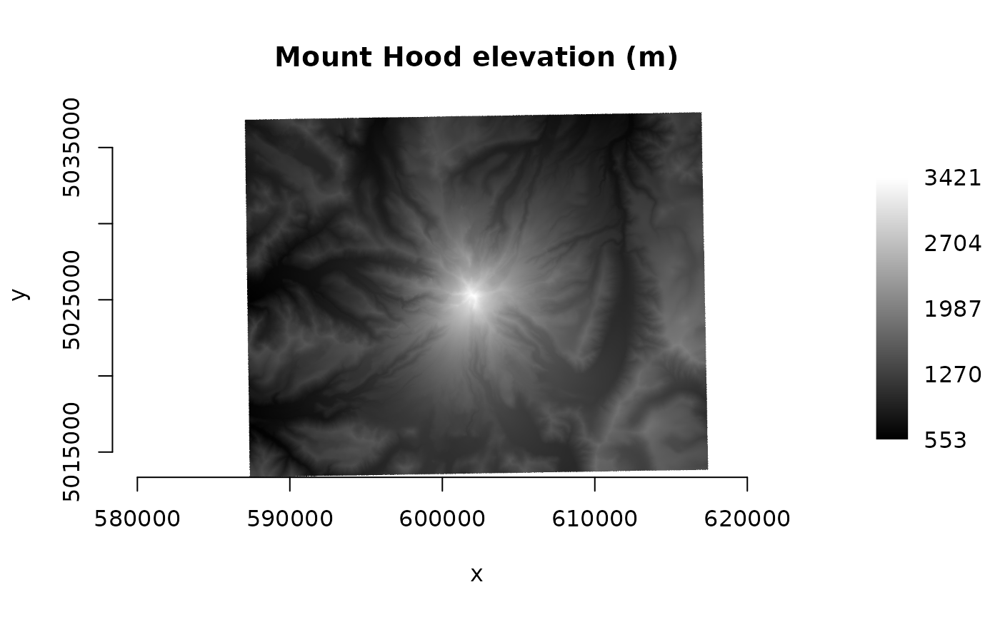
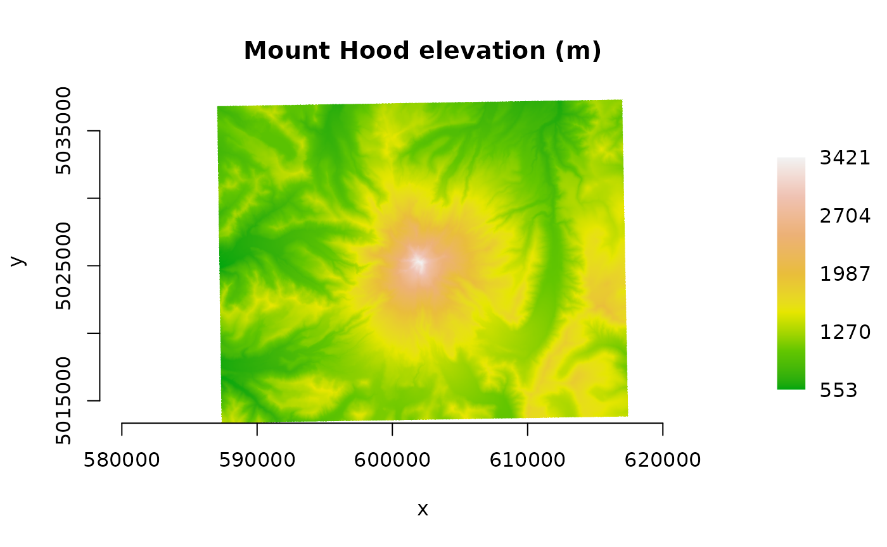
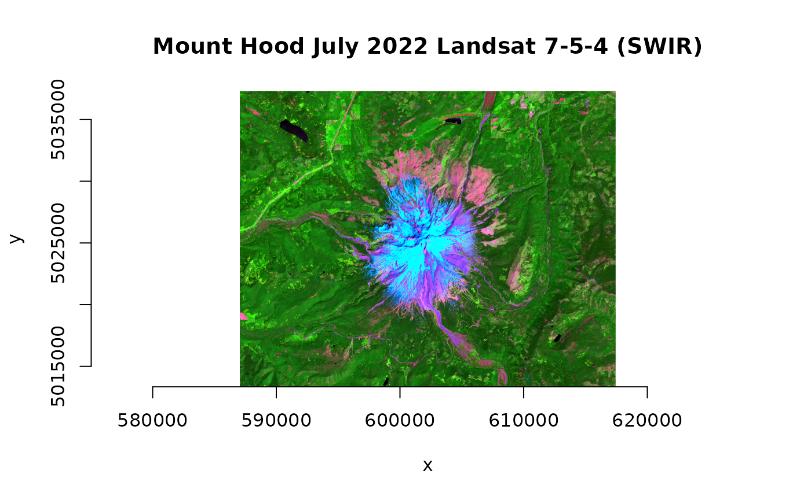
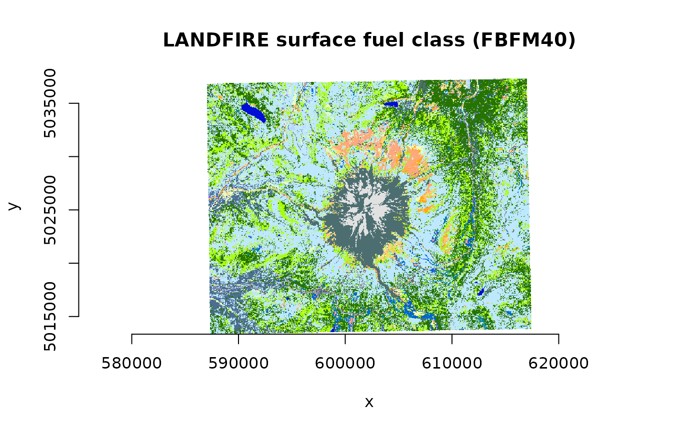
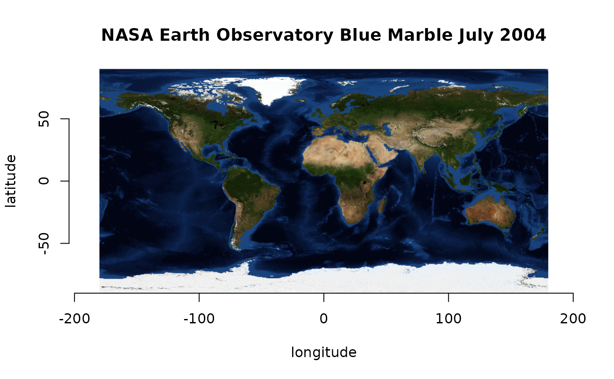

gdalraster::plot_raster() displays raster data that have
been read into a vector.
library(gdalraster)
#> GDAL 3.4.1, released 2021/12/27
url_dir <- "/vsicurl/https://raw.githubusercontent.com/usdaforestservice/gdalraster/main/sample-data/"Single-band grayscale or color ramp
f <- paste0(url_dir, "lf_elev_220_mt_hood_utm.tif")
ds <- new(GDALRaster, f, read_only=TRUE)
dm <- ds$dim()
r <- read_ds(ds)
ds$close()
# gray
plot_raster(r, xsize=dm[1], ysize=dm[2],
main="Mount Hood elevation (m)")
# color ramp
elev_pal <- c("#008435", "#B4E34F", "#F5D157", "#CF983B", "#B08153", "#FFFFFF")
ramp <- scales::colour_ramp(elev_pal, alpha=FALSE)
plot_raster(r, xsize=dm[1], ysize=dm[2], col_map_fn=ramp,
main="Mount Hood elevation (m)")
RGB
f <- paste0(url_dir, "landsat_c2ard_sr_mt_hood_jul2022_utm.tif")
ds <- new(GDALRaster, f, read_only=TRUE)
dm <- ds$dim()
r <- read_ds(ds, bands=c(7,5,4))
ds$close()
# normalize to ranges derived from the full Landsat scene (2-98 percentiles)
plot_raster(r, xsize=dm[1], ysize=dm[2], nbands=3,
minmax_def=c(7551,7679,7585,14842,24997,12451),
main="Mount Hood July 2022 Landsat 7-5-4 (SWIR)")
Color table
f <- paste0(url_dir, "lf_fbfm40_220_mt_hood_utm.tif")
ds <- new(GDALRaster, f, read_only=TRUE)
dm <- ds$dim()
print(paste("Size is", dm[1], "x", dm[2]))
#> [1] "Size is 1013 x 799"
# use CSV attribute table distributed by LANDFIRE
fbfm_csv <- system.file("extdata/LF20_F40_220.csv", package="gdalraster")
vat <- read.csv(fbfm_csv)
head(vat)
#> VALUE FBFM40 R G B RED GREEN BLUE
#> 1 91 NB1 104 104 104 0.407843 0.407843 0.407843
#> 2 92 NB2 225 225 225 0.882353 0.882353 0.882353
#> 3 93 NB3 255 237 237 1.000000 0.929412 0.929412
#> 4 98 NB8 0 14 214 0.000000 0.054902 0.839216
#> 5 99 NB9 77 110 112 0.301961 0.431373 0.439216
#> 6 101 GR1 255 235 190 1.000000 0.921569 0.745098
vat <- vat[,c(1,6:8)]
# read at reduced resolution for display
r <- read_ds(ds, out_xsize=507, out_ysize=400)
ds$close()
plot_raster(r, xsize=507, ysize=400, col_tbl=vat,
interpolate=FALSE,
main="LANDFIRE surface fuel class (FBFM40)")
Label with geospatial coordinates
f <- paste0(url_dir, "bl_mrbl_ng_jul2004_rgb_720x360.tif")
ds <- new(GDALRaster, f, read_only=TRUE)
dm <- ds$dim()
print(paste("Size is", dm[1], "x", dm[2], "x", dm[3]))
#> [1] "Size is 720 x 360 x 3"
srs_is_projected(ds$getProjectionRef())
#> [1] FALSE
bb <- ds$bbox()
r <- read_ds(ds)
ds$close()
plot_raster(r, xsize=dm[1], ysize=dm[2], nbands=3,
xlim=c(bb[1],bb[3]), ylim=c(bb[2],bb[4]),
xlab="longitude", ylab="latitude",
main="NASA Earth Observatory Blue Marble July 2004")